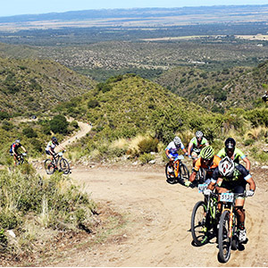

Carrera Altas Cumbres Cordoba

La edición de VAC 2021 te ofrece tres distancias para participar: 120 / 82 / 46 km. Tendrá tres lugares de largadas, finalizando todos en Mina Clavero, que junto a otras localidades cercanas, conforman una de las regiones turísticas más importantes de la provincia de Córdoba Argentina: El valle de Traslasierras.
Largada Km 0: Puente – Vado sobre Calle San Martín que cruza el Río de Mina Clavero, a 50 metros del Casino de Mina Clavero. Rumbo: Norte hacia localidad de Cura Brochero.